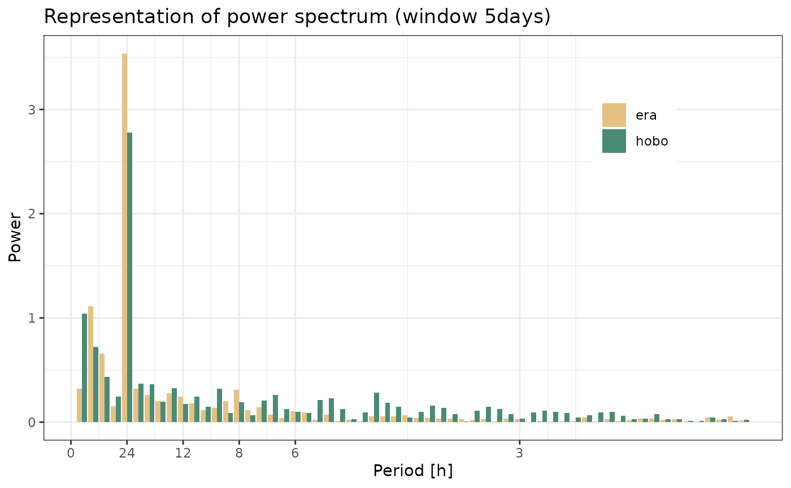
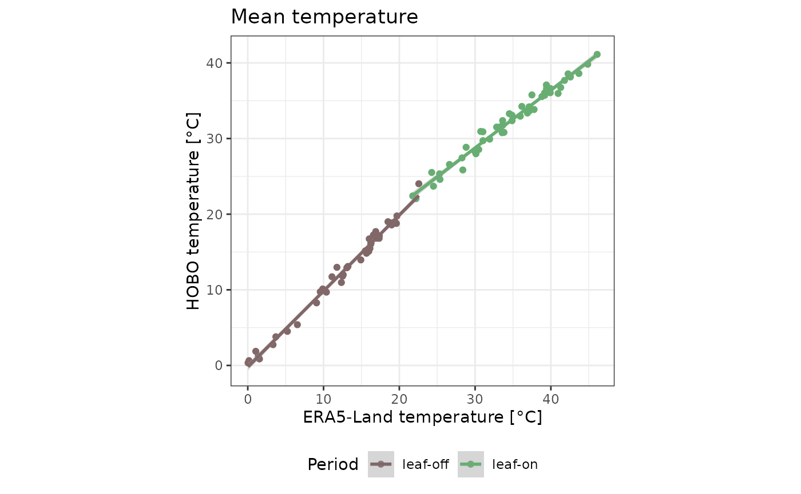
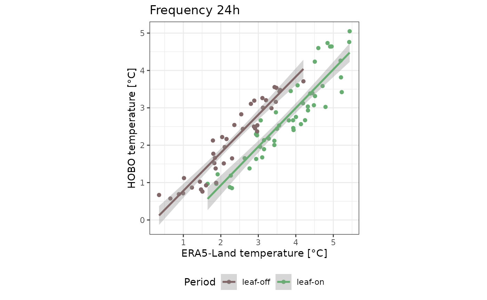
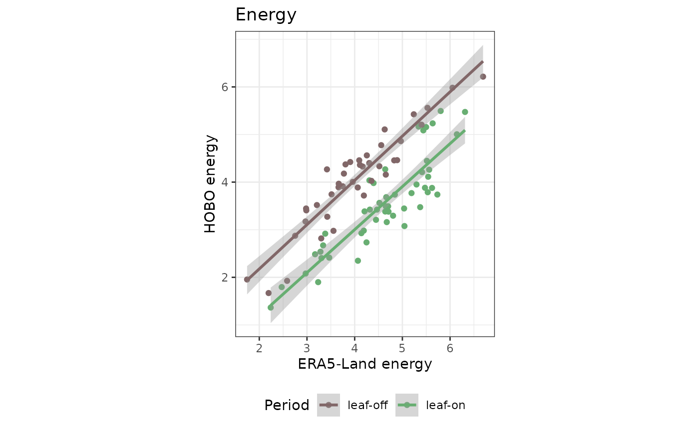

for (i in 1:(nrow(data) - 1)) {
if (data$datetime[i + 1] - data$datetime[i] > as.difftime(1, units = "hours")) { # nolint
print(i)
}
}
#> [1] 2018
#> [1] 6925Here is a problem at summer time? To discuss!
print(data[2015:2020, ])
#> # A tibble: 6 × 3
#> datetime t_hobo t_era
#> <dttm> <dbl> <dbl>
#> 1 2023-03-25 22:00:00 7.58 7.79
#> 2 2023-03-25 23:00:00 7.38 7.16
#> 3 2023-03-26 00:00:00 7.28 7.21
#> 4 2023-03-26 01:00:00 7.28 7.22
#> 5 2023-03-26 03:00:00 7.48 6.90
#> 6 2023-03-26 03:00:00 7.18 6.90After correction:
data$datetime[2019] <- data$datetime[2019] - as.difftime(1, units = "hours")
print(data[2015:2020, ])
#> # A tibble: 6 × 3
#> datetime t_hobo t_era
#> <dttm> <dbl> <dbl>
#> 1 2023-03-25 22:00:00 7.58 7.79
#> 2 2023-03-25 23:00:00 7.38 7.16
#> 3 2023-03-26 00:00:00 7.28 7.21
#> 4 2023-03-26 01:00:00 7.28 7.22
#> 5 2023-03-26 02:00:00 7.48 6.90
#> 6 2023-03-26 03:00:00 7.18 6.90Here is lacking 10 hours:
data[6920:6927, ]
#> # A tibble: 8 × 3
#> datetime t_hobo t_era
#> <dttm> <dbl> <dbl>
#> 1 2023-10-16 07:00:00 4.42 3.47
#> 2 2023-10-16 08:00:00 4.73 5.15
#> 3 2023-10-16 09:00:00 5.86 7.25
#> 4 2023-10-16 10:00:00 7.88 8.97
#> 5 2023-10-16 11:00:00 9.28 9.99
#> 6 2023-10-16 12:00:00 9.96 10.6
#> 7 2023-10-16 22:00:00 6.17 6.39
#> 8 2023-10-16 23:00:00 5.35 5.96The function return the fourier coefficient of t_hobo and t_era within data from date1 to date 2.
rfftfreq <- function(n, d = 1.0) {
k <- 0:floor(n / 2)
return(k / (n * d))
}
mcr_fft <- function(
data,
date1,
date2) {
subdata <- data %>%
filter(datetime >= date1, datetime <= date2)
n <- nrow(subdata) / 2 + 1
tibble(
fhobo = fft(subdata$t_hobo)[1:n],
fera = fft(subdata$t_era)[1:n]
)
}Test on 5 days
date1 <- as_datetime("2023-07-02 00:00:00")
date2 <- as_datetime("2023-07-06 23:00:00")
n <- 5 * 24
fdata <- data %>%
mcr_fft(date1, date2)
tibble(
period = rfftfreq(n),
hobo = 2 / n * abs(fdata$fhobo),
era = 2 / n * abs(fdata$fera)
) %>%
pivot_longer(
cols = hobo:era,
names_to = "source",
values_to = "power"
) %>%
ggplot(aes(period, power, col = source)) +
geom_line() +
theme_bw() +
scale_y_log10() +
ggtitle("Representation of power spectrum (window 5days)") +
xlab("Period [h ]") +
ylab("Power") +
scale_x_continuous(
breaks = c(0, 1 / 24, 1 / 12, 1 / 8, 1 / 6, 1 / 3),
labels = c("0", "24", "12", "8", "6", "3")
) +
scale_color_manual("", values = c("#e4c284", "#4a8b76")) +
theme(legend.position = c(0.8, 0.8))
# double bars plusque lignesThis is the core function wich return selected frequencies over a period
mcr_fft2 <- function(
data,
date_beg,
date_end,
wd,
shift,
freq) {
n <- wd * 24
wd <- as.difftime(n - 1, units = "hours")
shift <- as.difftime(shift, units = "days")
freq_tab <- tibble(hobo = double(), era = double())
date <- date_beg
while (date < date_end) {
date1 <- date
date2 <- date1 + wd
subdata <- data %>%
filter(datetime >= date1, datetime <= date2)
if (nrow(subdata) == n) {
fdata <- subdata %>%
mcr_fft(date1, date2)
freq_tab_date <- tibble(
hobo = 2 / n * abs(fdata$fhobo[freq + 1]),
era = 2 / n * abs(fdata$fera[freq + 1]) # diviser le 0 par 2
)
freq_tab <- bind_rows(freq_tab, freq_tab_date)
}
date <- date + shift
}
return(freq_tab)
}Usage example. The 0 frequency is the mean! But divide by 2.
freq <- 0
wd <- 5
shift <- 3
freq_on <- data %>%
mcr_fft2(
as_datetime("2023-05-01 00:00:00"),
as_datetime("2023-09-30 00:00:00"),
wd, shift, freq
) %>%
mutate(season = "leaf-on")
freq_off <- data %>%
mcr_fft2(
as_datetime("2023-01-01 00:00:00"),
as_datetime("2023-05-01 00:00:00"),
wd, shift, freq
) %>%
mutate(season = "leaf-off")
bind_rows(freq_on, freq_off) %>%
ggplot(aes(era, hobo, col = season)) +
geom_point() +
geom_smooth(method = "lm") +
theme_bw() +
scale_color_manual("Period", values = c("#816768", "#68ae72")) +
xlab("ERA5-Land temperature [°C]") +
ylab("HOBO temperature [°C]") +
coord_equal() +
theme(legend.position = "bottom") +
ggtitle("Mean temperature")
#> `geom_smooth()` using formula = 'y ~ x'
The 5 frequency is the period 24:
freq <- 5
wd <- 5
shift <- 3
freq_on <- data %>%
mcr_fft2(
as_datetime("2023-05-01 00:00:00"),
as_datetime("2023-09-30 00:00:00"),
wd, shift, freq
) %>%
mutate(season = "leaf-on")
freq_off <- data %>%
mcr_fft2(
as_datetime("2023-01-01 00:00:00"),
as_datetime("2023-05-01 00:00:00"),
wd, shift, freq
) %>%
mutate(season = "leaf-off")
bind_rows(freq_on, freq_off) %>%
ggplot(aes(era, hobo, col = season)) +
geom_point() +
geom_smooth(method = "lm") +
theme_bw() +
scale_color_manual("Period", values = c("#816768", "#68ae72")) +
xlab("ERA5-Land temperature [°C]") +
ylab("HOBO temperature [°C]") +
coord_equal() +
theme(legend.position = "bottom") +
ggtitle("Frequency 24h")
#> `geom_smooth()` using formula = 'y ~ x'
# Amplitude associé à fréquence 24hThis is the second function which return variance over a period or energy dissipation
mcr_fft3 <- function(
data,
date_beg,
date_end,
wd,
shift) {
n <- wd * 24 # number of samples
wd <- as.difftime(n - 1, units = "hours") # Remove the last hours
shift <- as.difftime(shift, units = "days")
energy_tab <- tibble(hobo = double(), era = double())
date <- date_beg
while (date < date_end) {
date1 <- date
date2 <- date1 + wd
subdata <- data %>%
filter(datetime >= date1, datetime <= date2)
if (nrow(subdata) == n) {
fdata <- subdata %>%
mcr_fft(date1, date2)
energy_tab_date <- tibble(
hobo = 2 / n * norm(fdata$fhobo[-1], type = "2"),
era = 2 / n * norm(fdata$fera[-1], type = "2")
)
energy_tab <- bind_rows(energy_tab, energy_tab_date)
}
date <- date + shift
}
return(energy_tab)
}
energy_on <- data %>%
mcr_fft3(
as_datetime("2023-05-01 00:00:00"),
as_datetime("2023-09-30 00:00:00"),
wd, shift
) %>%
mutate(season = "leaf-on")
energy_off <- data %>%
mcr_fft3(
as_datetime("2023-01-01 00:00:00"),
as_datetime("2023-05-01 00:00:00"),
wd, shift
) %>%
mutate(season = "leaf-off")
bind_rows(energy_on, energy_off) %>%
ggplot(aes(era, hobo, col = season)) +
geom_point() +
geom_smooth(method = "lm") +
theme_bw() +
scale_color_manual("Period", values = c("#816768", "#68ae72")) +
xlab("ERA5-Land energy") +
ylab("HOBO energy") +
coord_equal() +
theme(legend.position = "bottom") +
ggtitle("Energy")
#> `geom_smooth()` using formula = 'y ~ x'
# boxplot des rapport d'énergie
# 2 dates, fréquence
# > modules coefficients normalisés (puissance)
# > déphasage
# > fréquences associés